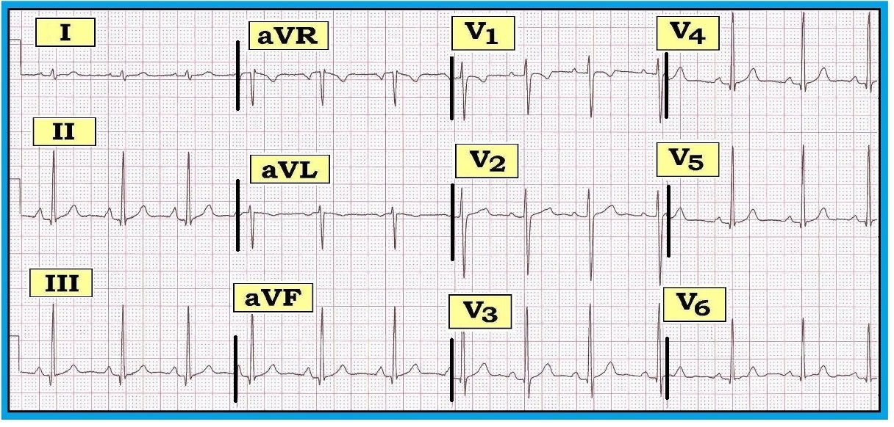
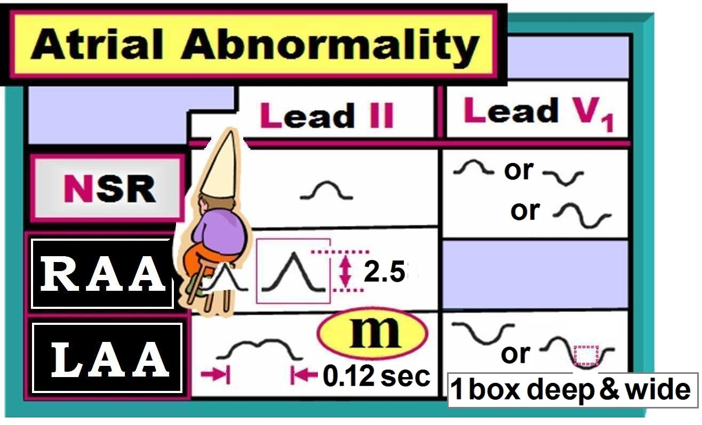
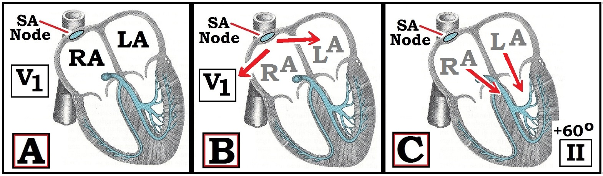

ECG Blog #75 — LAA hay LAE hay Không ...
Điện tâm đồ 12 chuyển đạo ở Hình 1 dưới đây được ghi ở một nam giới 27 tuổi.
- Bệnh nhân có nhĩ phải lớn không?
- Có bất thường nào khác không?


DIỄN GIẢI Hình 1:
Chúng tôi diễn giải điện tâm đồ ở Hình 1 như sau:
- Nhịp xoang (P dương ở chuyển đạo II ) — với khoảng R-R thay đổi nhẹ, phù hợp với loạn nhịp xoang. Các khoảng (khoảng PR/QRS/QT) bình thường. Trục hơi “thẳng đứng” — dù vẫn trong giới hạn bình thường (dương ở cả hai chuyển đạo I và aVF, dù rõ ràng gần aVF hơn nhiều). Chúng tôi ước tính trục vào khoảng +75-80 độ.
- RAA (bất thường nhĩ phải – Right Atrial Abnormality) — vì sóng P cao và nhọn ở từng chuyển đạo thành dưới. Sóng P ở chuyển đạo II cao hơn nửa ô lớn (>2.5mm). Ngoài ra — Không có bằng chứng lớn buồng tim.
- Thay đổi QRST: Có các sóng q nhỏ, hẹp ở nhiều chuyển đạo (thấy ở II,III,aVF; và V3,V4,V5,V6). Vùng chuyển tiếp xảy ra bình thường giữa V2-đến-V3. Có sóng T đảo ngược nông ở chuyển đạo aVL — nhưng ngoài ra không có thay đổi cấp tính.
NHẬN ĐỊNH: Loạn nhịp xoang. RAA. Sóng q nhỏ ở nhiều chuyển đạo. Ngoài ra là một điện tâm đồ không có gì đáng chú ý đối với một nam giới 27 tuổi. Chúng tôi có các bình luận sau:
- Câu hỏi hiển nhiên đầu tiên là TẠI SAO nam giới 27 tuổi này lại được làm điện tâm đồ ngay từ đầu? Chúng ta không được biết bệnh nhân có khoẻ mạnh và cần làm điện tâm đồ trong khám sức khoẻ trước khi mua bảo hiểm hay một thủ tục tầm soát nào khác — hay có lý do đến khám chính là khó thở cấp hoặc kéo dài.
- Loạn nhịp xoang như thấy ở Hình 1 là một biến thể bình thường ở người trẻ tuổi.
- Sự hiện diện của “RAA” trên điện tâm đồ không nhất thiết là dấu hiệu của “lớn” nhĩ phải. Đây không nhất thiết là một dấu hiệu bất thường ở người trẻ có trục tương đối thẳng đứng (Xem bên dưới).
- Dù điện thế QRS thoạt nhìn có vẻ “tăng” — tiêu chuẩn LVH (phì đại thất trái – Left Ventricular Hypertrophy) không được thoả vì bệnh nhân mới 27 tuổi. Như đã bàn trong ECG Blog #73 — biên độ QRS thường tăng ở người trẻ mà không nhất thiết phản ánh lớn buồng tim thực sự. Vì vậy, dù tổng sóng S sâu nhất ở V1,V2 + sóng R cao nhất ở V5,V6 trong Hình 1 rõ ràng vượt quá 35mm — điều này không được xem là “điện thế đạt tiêu chuẩn LVH” vì bệnh nhân này dưới 35 tuổi (Xem Hình 2 trong ECG Blog #73).
- Sóng T đảo ngược nông, đối xứng ở chuyển đạo aVL không bất thường nếu là dấu hiệu đơn độc. Sóng T đảo ngược đơn độc có thể bình thường ở một hoặc nhiều chuyển đạo sau: III, aVR, aVL, aVF và chuyển đạo V1 (Xem Hình 4 trong ECG Blog #9). Sóng T đảo ngược đơn độc ở chuyển đạo aVL thấy ở đây trong Hình 1 đặc biệt có khả năng là dấu hiệu bình thường, vì phức bộ QRS chủ yếu âm ở chuyển đạo này (trục sóng T thường đi sát theo trục QRS).
- Sóng q nhỏ thấy ở nhiều chuyển đạo trong Hình 1. Sóng q nhỏ ở thành bên thường gặp ở một hoặc nhiều chuyển đạo bên (chuyển đạo I,aVL; V4,V5,V6). Khi không có bất thường nào khác — chúng được gọi là sóng q vách bình thường. Chúng chỉ phản ánh việc vách liên thất bình thường được hoạt hoá từ trái-sang-phải — sao cho các chuyển đạo bên thấy vectơ khử cực thất ban đầu đi ra xa phía trái (do đó vẽ nên một sóng khởi đầu nhỏ, hẹp ở một hoặc nhiều chuyển đạo bên). Dù sóng q thường không thấy ở vị trí ra trước tới tận chuyển đạo V3 (như trong Hình 1) — điều này có lẽ phản ánh sóng R tương đối cao thấy ở chuyển đạo V3 trong Hình 1. Vì vậy nó không nhất thiết bất thường. Cuối cùng — sóng q vách bình thường đôi khi có thể thấy ở các chuyển đạo thành dưới ở người khoẻ mạnh có trục tương đối thẳng đứng. ĐIỀU CỐT LÕI: — Sự hiện diện của nhiều sóng q nhỏ và hẹp không nhất thiết là dấu hiệu bất thường ở một nam giới 27 tuổi có trục QRS tương đối thẳng đứng và không có thay đổi ST-T cấp tính.
Nhận định lâm sàng: Khi không có bệnh sử hay dấu hiệu khám thực thể nào gợi ý khác đi — điện tâm đồ ở Hình 1 rất có thể hoá ra không có gì đáng lo ngại.
------------------------------------------
LỚN NHĨ: Phát hiện trên điện tâm đồ như thế nào?
Phần còn lại của bài chúng tôi dành để tìm hiểu vấn đề đánh giá lớn nhĩ trên điện tâm đồ. Điểm cần nhấn mạnh là điện tâm đồ không nhạy cũng không đặc hiệu trong đánh giá lớn nhĩ. Nếu thực sự cần biết kích thước nhĩ — siêu âm tim chính xác hơn nhiều. Dù vậy — có những lúc điện tâm đồ có thể cung cấp manh mối quan trọng rất hữu ích về mặt lâm sàng.
- Nhận ra LAA (bất thường nhĩ trái – Left Atrial Abnormality) — có thể hỗ trợ chẩn đoán LVH trên điện tâm đồ.
- Điều này đặc biệt đúng khi có blốc nhánh nền.
- Nhận ra RAA (bất thường nhĩ phải – Right Atrial Abnormality) kết hợp với các dấu hiệu điện tâm đồ khác — có thể gợi ý mạnh RVH (và/hoặc tăng áp động mạch phổi). Nó cũng có thể gợi ý thuyên tắc phổi cấp.
- Dấu hiệu điện tâm đồ của lớn nhiều buồng tim (ít nhất LVH, LAA, RAA — và có thể cả RVH) ở bệnh nhân có bệnh tim nền gợi ý bệnh cơ tim.
Nhận biết trên điện tâm đồ: 2 chuyển đạo dùng để đánh giá lớn nhĩ là chuyển đạo II và V1. Các dấu hiệu bình thường và bất thường của nhịp xoang (NSR), RAA và LAA ở 2 chuyển đạo này được tóm tắt trong Hình 2:
- Lưu ý rằng với NSR (nhịp xoang bình thường – Normal Sinus Rhythm) — sóng P dương ở chuyển đạo II và có thể dương, âm hoặc hai pha ở chuyển đạo V1.
- Với RAA — sóng P cao (≥2.5 mm) và nhọn ở chuyển đạo II.
- Với LAA — sóng P hoặc có khía ở chuyển đạo II và/hoặc có thành phần âm sâu của sóng P ở chuyển đạo V1.


------------------------------------------
Cơ sở sinh lý: Cơ sở sinh lý của các dấu hiệu lớn nhĩ trên điện tâm đồ dựa trên: i) vị trí giải phẫu của chuyển đạo V1 (điện cực V1 nằm trên RA = nhĩ phải) — và — ii) hướng tương đối của quá trình khử cực RA và LA so với nút xoang (SA) (Hình 3).
- Với NSR (Normal Sinus Rhythm – nhịp xoang bình thường) — xung động khởi phát từ nút SA — nằm ở phần trên của nhĩ phải (Ô A trong Hình 3). Do đó, quá trình hoạt hoá RA sẽ được thấy là đi về phía chuyển đạo V1 — trong khi hoạt hoá LA sẽ được thấy là đi ra xa chuyển đạo V1 (mũi tên đỏ ở Ô B). Điều này giải thích vì sao về lý thuyết — sóng P ở chuyển đạo V1 bình thường phải hai pha, với thành phần dương ban đầu (khi RA được khử cực) — tiếp theo là thành phần âm (khi LA được khử cực). Trong thực hành — sóng P ở chuyển đạo V1 bình thường có thể dương, âm hoặc hai pha (Xem NSR ở Hình 2 phía trên).
- Lý do sóng P bình thường dương ở chuyển đạo II khi nhịp xoang được trình bày ở Ô C của Hình 3. Tổng hợp hoạt hoá RA và LA được thấy là đi về phía chuyển đạo II ở +60 độ (các mũi tên ở Ô C).


------------------------------------------
Tiêu chuẩn điện tâm đồ: Sóng P bình thường ở chuyển đạo II, V1
Nắm được các khái niệm minh hoạ ở Hình 3 giúp hiểu các dấu hiệu lớn nhĩ trên điện tâm đồ trình bày ở Hình 2:
- Với NSR (Normal Sinus Rhythm – nhịp xoang bình thường) — sóng P ở chuyển đạo V1 bình thường có thể dương, âm hoặc hai pha.
- Do đó, sóng P âm ở chuyển đạo V1 không phải là bất thường.
- LƯU Ý: Cần biết rằng sai lệch nhỏ so với vị trí đặt điện cực đúng có thể làm thay đổi hình dạng sóng P ở V1. Dù đã cố gắng hết sức — đặt sai vị trí điện cực trước tim vẫn tương đối thường gặp. Ví dụ, đặt điện cực V1 và V2 quá cao (1 hoặc 2 khoang liên sườn) trên ngực — có thể tạo ra phần âm nổi bật của sóng P, khiến ở chuyển đạo V1 có thể gợi ý sai là LAA (Xin xem Bình luận của tôi ở cuối trang Dr. Smith's Nov. 4, 2018 ECG Blog — về 3 manh mối giúp nhanh chóng nhận ra đặt sai vị trí điện cực V1 và V2).
RAA: Tiêu chuẩn điện tâm đồ (Xem Hình 2)
- RAA (Right Atrial Abnormality – bất thường nhĩ phải) — được chẩn đoán khi thấy sóng P cao, nhọn (Peaked) và chóp nhọn (Pointed) ở các chuyển đạo "phổi" (Pulmonary). Vì bệnh nhân COPD thường có cơ hoành thấp (và do đó có trục hướng xuống dưới) — chúng tôi coi các chuyển đạo thành dưới (II,III,aVF) là các chuyển đạo "phổi".
- Sóng P phải cao ít nhất nửa ô lớn (=2.5mm) — ở ít nhất một trong các chuyển đạo thành dưới để thoả tiêu chuẩn RAA.
- NẾU sóng P trông "ngồi lên thấy đau" — Hãy nghĩ tới RAA! = P Pulmonale (P phế).
- Chuyển đạo V1 thường không giúp ích trong chẩn đoán RAA trên điện tâm đồ. Dù vậy — đôi khi bạn có thể thấy sóng P tương đối nhọn (không nhất thiết cao tới nửa ô lớn) ở chuyển đạo V1 — điều này gợi ý mạnh RAA.
LAA: Tiêu chuẩn điện tâm đồ (Xem Hình 2)
- LAA (Left Atrial Abnormality – bất thường nhĩ trái) — được chẩn đoán khi thấy sóng P hình chữ m‑ (có khía) và giãn rộng (≥0.12 giây) ở một chuyển đạo "hai lá" ("mitral") (I,II,aVL) — và/hoặc có thành phần âm sâu của sóng P ở chuyển đạo V1 = P Mitrale (P hai lá).
- Lý do sóng P trở nên rộng hơn khi có LAA là vì nhĩ trái được hoạt hoá sau nhĩ phải (vì nút SA nằm ở RA). Chính việc cộng thêm thành phần LA này vào sóng P tạo ra chỗ khía/‘bướu’ phụ để hình thành chữ “M” ở chuyển đạo II.
- Dấu hiệu điện tâm đồ tốt nhất của LAA là thấy thành phần âm sâu của sóng P ở chuyển đạo V1 — sâu hoặc rộng ít nhất 1 ô nhỏ.
- Chúng tôi thường chẩn đoán dè dặt LAA vì độ đặc hiệu kém của điện tâm đồ đối với lớn nhĩ.
------------------------------------------
Thuật ngữ: — Lớn (Enlargement) hay Bất thường (Abnormality)?
Nhiều bác sĩ lâm sàng dùng LAA/RAA — và RAE/LAE thay thế cho nhau. Chúng tôi chuộng các thuật ngữ “LAA” và “RAA” (trong đó “A” là viết tắt của Abnormality – bất thường) để thừa nhận rằng một sóng P trông bất thường trên điện tâm đồ không phải lúc nào cũng có nghĩa là “lớn” buồng nhĩ thực sự. Nó chỉ có nghĩa là sóng P có hình dạng khác thường.
- Các lý do khác gây sóng P bất thường gồm thể trạng (sóng P cao, nhọn có thể thấy ở người gầy có trục thẳng đứng); tăng áp lực nhĩ (tức là do suy tim) và rối loạn dẫn truyền trong nhĩ.
- Bối cảnh lâm sàng thường sẽ gợi ý RAA/LAA có khả năng phản ánh “lớn” nhĩ thực sự — hay điều gì khác. NẾU chúng ta biết nhiều khả năng có lớn buồng nhĩ thực sự (do LVH hoặc RVH rõ trên điện tâm đồ ở bệnh nhân có bệnh tim nền) — thì chúng ta có thể chuyển sang dùng tên gọi LA“E” hoặc RA“E”. Nếu không — chúng tôi thường chuộng dùng các thuật ngữ LA“A” hoặc RA“A”.
- LƯU Ý 1: Tâm nhĩ không “phì đại” theo nghĩa thành nhĩ không dày lên. Thay vào đó — tâm nhĩ lớn ra (giãn).
- LƯU Ý 2: Một số sóng P trông bất thường nhất (có khía ở nhiều chuyển đạo) gặp khi có rối loạn dẫn truyền trong nhĩ. Chúng tôi nghi ngờ điều này (thay vì lớn nhĩ) bất cứ khi nào có khía và hình dạng sóng P bất thường ở nhiều chuyển đạo ...
------------------------------------------
CẢNH BÁO (Vượt ra ngoài phần cốt lõi): Phù hợp với thực tế lâm sàng rằng điện tâm đồ không nhạy cũng không đặc hiệu đối với lớn buồng nhĩ thực sự — một hiện tượng tôi đôi khi quan sát được là tăng áp lực nhĩ (thường gặp trong suy tim cấp) có thể thoáng qua làm tăng biên độ sóng P, giống RAA và/hoặc LAA — nhưng sau đó hết trong vòng 1-2 ngày sau khi bệnh nhân được điều trị.
------------------------------------------
ĐIỀU CỐT LÕI: — Quay lại với ca bệnh ban đầu, nam giới 27 tuổi có điện tâm đồ ở Hình 1 — nhiều khả năng các sóng P cao, nhọn và chóp nhọn ở các chuyển đạo thành dưới không đại diện cho lớn buồng nhĩ thực sự. Chúng tôi nói vậy vì: i) tuổi của bệnh nhân; ii) trục QRS tương đối thẳng đứng; và, iii) không có bất thường nào khác trên bản ghi. Dù vậy — cần biết bệnh sử và dấu hiệu khám thực thể (có âm thổi ở tim không?) để đánh giá điều này tốt hơn.
- Ưu tiên dùng thuật ngữ “RAA” thay vì “RAE” — cho phép chúng ta ghi nhận sóng P trông lạ trên điện tâm đồ mà không cần nhất thiết quy nó cho bệnh lý tim nào ở nam giới 27 tuổi này, người có thể rốt cuộc có trái tim bình thường.
-------------------------------------
- Để biết thêm thông tin — TRUY CẬP:
- Xem thêm ECG Blog #73 — để ôn lại tiêu chuẩn điện tâm đồ của LVH -
- Xem ECG Blog #77 — để ôn lại tiêu chuẩn RVH -